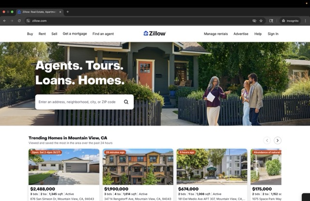
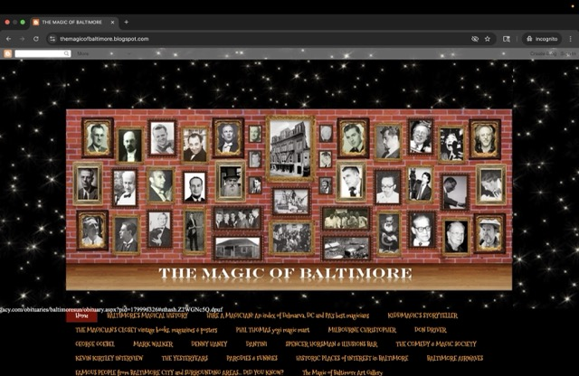

Website Evaluations
Zillow
Zillow is a popular real estate website where users can search for homes, apartments, and rentals. The site combines property listings, photos, maps, and filters to make it easy for people to browse and compare housing options.
- Contrast: Zillow uses strong contrast with white backgrounds, dark text, and blue accents. This makes information clear and easy to read.
- Repetition: The site repeats design elements like blue buttons, search bars, and consistent fonts across all pages. This helps maintain a professional and recognizable style.
- Alignment: Content is neatly aligned in grids and columns. Property images, prices, and details are organized in a clean, structured layout.
- Proximity: Related items (like an image, price, and description of a house) are grouped closely together. This makes it easier for users to scan and understand each listing quickly.
The Magic Of Baltimore
The Magic of Baltimore is a blog that explores the history of magic in Baltimore, highlighting magicians, memorabilia, and stories. While it provides interesting niche content, the site has some design and usability flaws that make it less effective for visitors.
- Contrast: The blog uses orange text on a black or red background, which sometimes works for readability. However, there in some areas there isn't much visual contrast, and sidebars blend with the main content, making it harder to focus on important elements.
- Repetition: The website maintains some repetition, but there are some glaring issues. Many different fonts are used including some that are very difficult to read. The formatting between posts is not consistent with some text being centered and some not.
- Alignment: The posts and sidebars follow a basic column layout, but some images and text feel loosely placed. This inconsistent alignment makes the site look cluttered and less polished.
- Proximity: Related content, like a photo and caption, is usually grouped correctly. Still, the sidebar links and ads are crowded together with little spacing, which confuses which elements belong together.